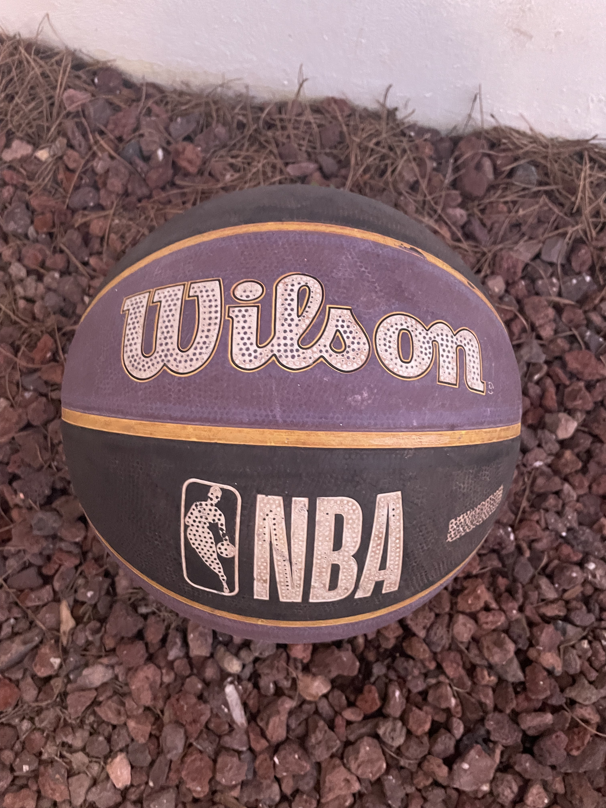

La pelota de baloncesto es
un elemento esencial en el juego de baloncesto. Suele ser de color
naranja y está fabricada con materiales duraderos como el caucho o el
cuero. Su diseño cuenta con una superficie rugosa para facilitar el
agarre y el manejo. La pelota tiene un diámetro de unos 24 centímetros
y un peso de entre 600 y 650 gramos, lo que la hace adecuada para los
movimientos rápidos del juego. En partidos profesionales, la pelota
debe cumplir con ciertos estándares de calidad y tamaño establecidos
por las federaciones deportivas. Su uso es clave en la práctica de
habilidades como el driblar, el pasar y el lanzar a canasta. Sin duda,
es el objeto más representativo del baloncesto, un deporte popular a
nivel mundial.
|

|